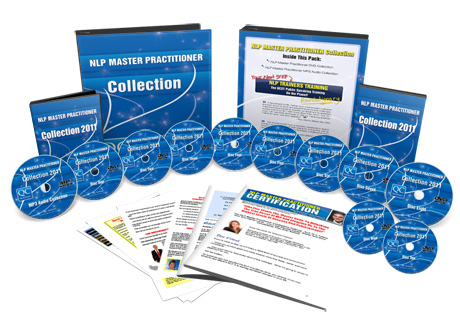

“Do You Qualify To Join The NLP Elite And Discover Success Secrets That Few People Ever Know About?”
The i-NLP Master Practitioner Certification Training is for those people who are serious about taking advantage of the power of NLP to help both themselves and others.
At the Master Practitioner level you’ll…
- Discover the most advanced and powerful NLP techniques for getting results FAST
- Gain the skills and confidence to work effectively with others and help them to make lasting changes
- Make dramatic breakthroughs in your own life as you discover more about who you really are and what’s really possible for you


...plus much, much more.
The i-NLP Master Practitioner Training is NOT for everyone. Please only apply if you are serious about enjoying a level of success and achievement in your life that most people would never dare to dream of.
To get the full details in the NEW NLP Master Practitioner Special Report PLUS a FREE GIFT VOUCHER that entitles you to a $1,000 saving, please enter your details below…
 I have learnt a lot , met a lot of people and made new goals and am so excited to put my thoughts, ideas, dreams on paper and start spreading my love through teaching people about our greatest gift LOVE. OH...and I'm coming back to do the Trainers Training. AMAZING!
I have learnt a lot , met a lot of people and made new goals and am so excited to put my thoughts, ideas, dreams on paper and start spreading my love through teaching people about our greatest gift LOVE. OH...and I'm coming back to do the Trainers Training. AMAZING!
Ricardo Afonso
Hoppers Crossing, VIC
 I now know where I want to go, who I want to be and how to get there!! I am truly happy with everything, the training and I have met some pretty amazing people along the way. I have an amazing connection with myself now and I can't wait to go back to Perth and start my journey. Thank You!
I now know where I want to go, who I want to be and how to get there!! I am truly happy with everything, the training and I have met some pretty amazing people along the way. I have an amazing connection with myself now and I can't wait to go back to Perth and start my journey. Thank You!
Jeremy Walker
Aspley, QLD
 It is a beautiful experience. I have met so many wonderful people and that's what NLP is about, having a human experience, NLP helps us realize how much more we can be , through others.
It is a beautiful experience. I have met so many wonderful people and that's what NLP is about, having a human experience, NLP helps us realize how much more we can be , through others.
NLP is a decision. I have decided that when I go out into the world amazing things will happen.
Keti Trajanovska
Joondanna, WA
 I have processed SOOO much - found issues I didn't even know existed, well limiting behaviours!!! The setting, the atmosphere, the content covered, all excellent. Many many thanks to Quantum Change Seminars and all associated with QC.
I have processed SOOO much - found issues I didn't even know existed, well limiting behaviours!!! The setting, the atmosphere, the content covered, all excellent. Many many thanks to Quantum Change Seminars and all associated with QC.
Cynthya Popperwell
Seaforth, QLD